Обустройство гаражей.

Максимально отличается гараж от любого другого строения именно своим внутренним обустройством, которое максимально же отвечает предназначению гаража. Судите сами — открытый бокс в многоэтажном гараже и гараж-мастерская в индивидуальном доме для постоянного проживания имеют сугубо разное наполнение и оснащение. Играют немалую роль и вкусы, привычки и пристрастия хозяев.
4.2.1. Смотровые канавы и погребаАвтосервис в наше время приобрел огромный размах, но отношения с ним у различных автовладельцев по всевозможным причинам складываются по-разному. Кто-то предпочитает, а кто-то вынужден заниматься обслуживанием и ремонтом своего автомобиля самостоятельно. И поскольку делать это лучше всего в гараже, смотровая канава в этом случае просто необходима (фото 4.2.1.1).
Обычно, устраивая смотровую канаву, учитывают такие требования:
— длина смотровой канавы должна быть несколько больше, чем длина автомобиля — это даст возможность беспрепятственно спускаться в нее, не откатывая при этом автомобиль;
— ширину канавы выбирают в зависимости от размера колеи автомобиля;
— глубина должна обеспечивать свободный доступ к узлам автомобиля, расположенным на его днище;
— при устройстве канавы желательно предусмотреть ниши для хранения инструментов и расходных материалов;
— в нерабочем положении смотровую канаву необходимо закрывать, для чего она соответствующим образом оборудуется.
Как и любое сооружение, ограждения могут быть выполнены из различных материалов, но конструкция их, подобно фундаментам, сильно зависит от местных грунта и гидрологических условий. В сухом песчаном грунте, например, ограждения из хорошо обработанных антисептиком досок прослужат более чем достаточно. Изготовление необходимых для этого дощатых щитов является частным случаем выполнения деревянных обшивок построек, а следовательно, здесь повторяться не стоит.
Делают ограждения канавы и из листовой стали разной толщины, в частности с усилением ребрами жесткости. С точки зрения производства сварочных работ такая конструкция сложной никак не является. Но своя специфика есть, да еще какая! Вполне понятно, что канава должна быть сухой, в противном случае в ней не только нельзя будет работать, но и в гараже, чаще всего под автомобилем, образуется стоячее болото, что просто не допустимо. Стало быть, применительно к влагонасыщенным грунтам ограждения должны быть герметичны. Это достижимо не только сваркой, но и с помощью всевозможных герметиков, которых теперь изобилие. В известной степени разрешима и еще одна проблема такой конструкции: борьба с коррозией металла, которая в настоящее время позволяет продлить ресурс сооружения до вполне приемлемой величины. Но что не удалось победить даже на современном уровне развития техники, так это закон Архимеда (помните: «Тело, впернутое в воду, выпирает на свободу силой выпертой воды телом, впернутым туды»). Изустно кочуют разные истории то о всплывшей цистерне под дачным домом, то о гаражной яме, которая тоже подчинилась закону Архимеда.
В любом случае об этом следует помнить, что не так уж и сложно, по меньшей мере, до открытия антигравитации. А что нужно сделать? Ясно, что если конструкция пытается всплыть, то нужно поставить препятствующие этому якоря. Какие и как? Если на уровне пола вдоль стенок канавы горизонтально вбить в грунт металлические пластины или прутки арматурного железа, которые при сборке всей конструкции связать с ней сваркой, якорь будет идеальным. Можно прочно соединить верхние кромки стенок ограждения с конструкциями пола, особенно если он бетонный, можно в основании канавы заложить бетонную пяту, подобную фундаментной и к ней привязать всю конструкцию, можно… в каждых конкретных условиях наверняка еще что-нибудь придумать, важно не забывать все еще действующий закон Архимеда.
Какими еще могут быть стенки смотровой канавы? Ну, конечно, кирпичными.
Речь может идти и о бетоне. Но в данном случае на нем следует остановиться несколько подробнее, ведь залить бетонной смесью ямку для крепления столба или даже плиту горизонтального основания и вертикальные стенки ограждения канавы — вещи разные.
Что особенно важно? Пол и стены ямы необходимо возводить только из железобетона, а потому понадобятся арматурное железо или арматурная сетка и соответственно инструменты для работы с ними. При самостоятельном приготовлении бетонной смеси потребуется не только цемент и песок, но и гравий.
Строительство смотровой канавы начинают с выкапывания котлована (фото 4.2.1.1). При этом учитывают размеры будущей канавы, а также толщину ее стенок и пола.
Наиболее часто рекомендуется следующая последовательность работ: сначала бетонируют пол, после схватывания его бетона на нем устанавливают опалубку для заливки стен, заливают стены, после схватывания бетона стен снимают опалубку и производят окончательную обработку полученных поверхностей. Перед бетонированием дно канавы уплотняют, втрамбовывая гравий несколькими слоями. Толщина гравийной подсыпки обычно составляет до 10 см. Затем гравий покрывают песком, слоем 5 см и тоже трамбуют. На грунте повышенной влажности дно канавы предварительно покрывают еще и глиной, которую трамбуют, а уже затем укрывают гравием. Далее обеспечивают гидроизоляцию при помощи полиэтиленовой пленки и бетонируют днище ямы, выходя на нужную отметку.
Для окантовки смотровой канавы, прежде чем приступить к сооружению ее бетонных стенок, необходимо изготовить раму из металлического уголка или швеллера и установить ее внутри опалубки на уровне будущего пола. Раму фиксируют на заливаемых в бетон анкерах (фото 4.2.1.2).
Арматуру необходимо помещать в середине бетонного слоя (желательно толщиной не менее 10 см). В случае с полом это достигается легко: на первый полуслой бетонной смеси кладется арматура и заливается вторым полуслоем. Для стенок это достижимо в меньшей степени и то с помощью дополнительных ухищрений. При этом главная опасность заключается в образовании пустот — незаполненных бетоном мест, поэтому смесь не должна быть слишком густой, а при заливке ее необходимо уплотнять всеми доступными средствами, например, штыкованием прутком арматурного железа. Арматуру пола необходимо соединить с арматурой стен — до установки опалубки. В процессе заливки стен нет ничего хуже не выдержавшей нагрузки опалубки, в силу чего она должна быть абсолютно надежной — лучше в данном вопросе перестраховаться.
Нетрудно заметить, что описанная выше технология рассчитана на самостоятельное приготовление бетонной смеси, ведь бетон пола канавы должен схватиться до установки опалубки для заливки стен, а значит, нельзя воспользоваться поставками сразу всего необходимого для полного объема работ бетона. Объем бетона для заливки ограждений канавы может составлять примерно 1,2 м . Можно только гадать — сколько же продлится процесс такого бетонирования пусть даже с помощью бытовой электрической бетономешалки. А между тем уже давно прогрессивной является именно единовременная заливка бетона, да и с доставкой его в настоящее время проблем нет. Так как же быть? Несколько изменяем технологию: опалубку для заливки стен канавы ставим не на готовый пол, а на подготовленный для его заливки грунт. Располагая общим количеством бетона, производим заливку всей конструкции, начиная с пола смотровой канавы, что технологически удобнее и вдобавок надежнее. При этом в бетоне оказываются какие-то фрагменты нижней части опалубки. После схватывания бетона снимаем опалубку, либо оставляя в бетоне погруженные в него фрагменты опалубки (с частичным ее разрушением), либо извлекая их с минимальным разрушением бетона. В последнем случае на заделку выемок в бетоне потребуется несколько ведер бетонной смеси, которые действительно нетрудно приготовить хоть лопатой.
Единовременная заливка бетона приводит к еще большему выигрышу, что называется по всем статьям, при изготовлении объединенных по ставшей уже классической схеме смотровой канавы и погреба — вход в погреб в дальнем от ворот конце канавы (фото 4.2.1.3). Понятно, что при этом в погребе должна быть установлена своя опалубка, которая в отличие от опалубки канавы, напоминающей ящик без дна, должна иметь форму будки с плоской крышей. На этой-то крыше и формируется железобетонное перекрытие между объемами погреба и собственно гаража. Заливка бетонной смесью такой объединенной конструкции производится аналогично единовременной заливке смотровой канавы с формированием перекрытия погреба в завершающей стадии заливки. И, наконец, самым оптимальным вариантом является, безусловно, единовременная заливка бетонной смесью ограждений и смотровой канавы, и погреба, и пола гаража, если таковой решено делать из бетона.
Цокольный этаж или подвал. Многие застройщики используют пространство под гаражом для оборудования подвала. В этом случае наиболее целесообразно совмещать сооружение несущего фундамента и стен подгаражного помещения. Резонно, чтобы площадь подвала была равна площади подземного сооружения, — это значительно упростит строительные работы.
Часто коробка (стены и пол) подвала выполнена из бетона и служит в качестве несущего фундамента, на который опираются плиты перекрытия и стены гаража. В этом случае основу всей конструкции составляет ленточный фундамент глубокого заложения.
Чтобы влага из почвы через фундамент не проникала в верхние слои сооружения, между фундаментом и плитой перекрытия размещают гидроизоляцию из рубероида. При этом выступающие наружу края рубероида загибают вниз, защищая фундамент от дождя, стекающего по стене. Для отвода поверхностных вод от стен гаража и фундамента формируют отмостку, лучше бетонную. Почву под ней нужно не только надежно уплотнить (иначе отмостка просядет), но и дополнительно затрамбовать в нее гравий.
При сооружении цокольных помещений решающее значение имеет гидроизоляция бетонной стенки. Ее желательно сделать двойной. Непосредственно по поверхности бетонной стенки располагают слой гидроизоляционного рулонного материала, каковых в настоящее время много, но в крайнем случае можно использовать и полиэтиленовую пленку. Между почвой и гидроизоляцией желателен еще один слой — глиняный замок.
Под нижней (опорной) частью бетонной коробки фундамента кроме гидроизоляции и тонкой песчаной подушки устраивают дренажный слой из щебенки. Песчаную подушку на дренажный слой из щебня укладывают для того, чтобы не нарушить целостность пленки. Для пола, уложенного по жесткому основанию (гравийная утрамбованная засыпка), достаточно слоя бетона толщиной 70–100 мм, лучше с арматурой. Толщина несущих стен помещения обычно составляет 200–250 мм. При их возведении также необходимо использовать арматуру.
Однако подземный этаж гаража можно сооружать не только из бетона. Для кладки стен, соблюдая все методы обеспечения гидроизоляции, можно использовать и кирпич, и природный камень, и бетонные блоки. Строительство фундамента (цокольного этажа) начинают с котлована. После этого дно ямы уплотняют, втрамбовывая в почву гравий, затем опять засыпают слоем гравия, снова утрамбовывают, после чего засыпают слоем песка. Толщина слоя гравия обычно составляет 10–15 см, но при грунте повышенной влажности эту толщину увеличивают до 20 см. Песчаную подушку насыпают тонким слоем до 5 см, так как ее основное назначение — прикрыть острые выступы гравия, чтобы предотвратить прокол гидроизоляции.
Далее подготавливают стены подвала. Прежде всего необходимо выровнять стенки котлована и покрыть их слоем глины, то есть сделать глиняный замок. Следует обратить внимание, что для этой цели подойдет не всякая глина. Лучшей считается жирная глина с содержанием песка по объему не более 10–15 %. Чем выше жирность глины, то есть чем меньше в ней песка, тем лучше. Для повышения пластичности глины, предназначенной для глиняного замка, ее замачивают и выдерживают в воде несколько дней. Улучшают качество глины и вымораживанием, оставляя заготовленную с осени глину зимовать на открытом месте. Повышают пластичность глины добавлением в нее извести или известкового теста (до 20 % по объему). Формируя водонепроницаемую стенку (замок), глину укладывают отдельными комками размером с крупное яблоко, разравнивая их на поверхности стен котлована. Толщина глиняной стенки зависит от сыпучести почвы и составляет от 5 до 10 см (на песчаных почвах эта толщина достигает 15 см).
Некоторые сложности при устройстве глиняного замка возникают на грунтах с большой сыпучестью. В этом случае образовать прочную вертикальную стенку из глины очень трудно, поэтому приходится использовать армирующую строительную сетку.
Подготовленную глиняную поверхность сразу же накрывают полиэтиленовой пленкой, которую расстилают через весь котлован или укладывают отдельными кусками. Главное, чтобы полотнища пленки располагались внахлест и ширина этого нахлеста была не меньше 20–25 см. На практике часто используют парниковую пленку и укладывают ее в два слоя с нахлестом, равным половине ширины полотнища. Затем бетонируют днище подвала и свежеуложенный бетон покрывают пленкой, a через двое-трое суток можно приступить к установке внутренней опалубки. Бетонирование стен следует вести без перерыва, применяя для уплотнения бетонного раствора вибратор. Если нет специального строительного вибратора, резонно использовать электродрель с перфоратором, укрепив в ее патроне металлический пруток. При помощи такого приспособления можно уплотнять бетонную массу толщиной до полуметра. При отсутствии заводских плит потолочное перекрытие изготавливают из железобетона. Для этого из арматурного металла сваривают каркас, предусмотрев в нем входные люки.
4.2.2. ВентиляцияГараж является не только средством защиты от посягательств злоумышленников на автомобиль, но и очень важен с точки зрения сбережения его кузова. Вопрос: где и как хранится автомобиль — совсем не праздный. Если автомобиль длительное время хранится, например, в «холодном» металлическом гараже, не стоит уповать на то, что поскольку он не эксплуатируется, то и ничего с ним и не происходит. Действительно, в этом случае по сравнению с улицей он защищен значительно лучше. Но пагубное воздействие конденсата при этом может оказаться намного серьезнее, чем на открытом воздухе. В этом нет ничего удивительного, поскольку металлический гараж — это тоже замкнутая полость, но большая, а значит, с большим количеством собственного конденсата, образующегося, например, при интенсивном понижении температуры окружающего воздуха. Способы борьбы с этим давно известны: эффективная вентиляция. Другое дело — как часто это встречается на практике. Меньше всего хлопот при длительном хранении автомобиля в теплом гараже, однако и в этом случае он нуждается в хорошей вентиляции.
В холодное время года положение только усугубляется с наличием в гараже смотровой ямы, цокольного этажа или погреба. Почему? Поскольку из глубины к земной поверхности идет тепло, в погребе всегда теплее, чем в гараже. В этом случае сильно возрастает конвективная составляющая теплопереноса, т. е. тепло в объем гаража переносится большей частью воздухом, поднимающимся наверх. Это было бы прекрасно, если бы этот воздух не имел по сравнению с воздухом основного объема гаража повышенное влагосодержание. Эта влага и выпадает из поднявшегося остывающего воздуха в виде конденсата или инея (в зависимости от температуры в гараже). Вот почему вентилировать погреб на предмет удаления из него излишков влаги следует уж никак не через гараж.
Та же картина и при сравнении окружающего воздуха и воздуха в гаражном объеме. Следовательно, в любом случае более холодный наружный воздух с меньшим влагосодержанием, поступая в вентилируемый объем, нагревается, увеличивает свое влагосодержание (забирает влагу из этого объема) и уносит ее в атмосферу. Но это не вся польза от вентиляции. В атмосфере гаража может содержаться множество токсичных примесей (выхлопные газы, пары топлива, пары различных растворителей и т. п.). От них тоже позволяет избавиться система вентиляции, эффективность которой не зря измеряется в объемах в ед. времени. Например, оценивая систему вентиляции того же погреба, можно сказать: «два объема в час».
Из изложенного выше следует, что для достижения сколько-нибудь эффективной вентиляции необходимо обеспечить поступление в вентилируемый объем наружного воздуха (приток) и удаление из него воздуха наружу (вытяжку). Такая вентиляция так и называется: приточно-вытяжная. Если вытяжка происходит за счет естественного подогрева воздуха в вентилируемом помещении с образованием при этом соответствующей тяги (как правило, небольшой), говорят: «естественная». Если вытяжка производится принудительно (посредством вентилятора, например), система вентиляции превращается в принудительную.
Применительно к гаражам всегда имеет смысл только приточно-вытяжная система вентиляции, которая в зависимости от требуемой эффективности может быть как естественной, так и принудительной. В случае организации воздушного вентиляционного канала в кирпичной кладке его выполняют сечением в один кирпич (26 ? 13 см). Иногда с той же целью используют пустотелые кирпичи или блоки, уложенные в кладку на боковую грань. Помещенные таким образом в верхних и нижних углах стен гаража кирпичи уже представляют собой простейшую систему его вентиляции. Судить об эффективности такой системы трудно, но, во-первых, как-то вентиляция происходить будет, а во-вторых, проще просто не бывает. Для предотвращения проникновения внутрь грызунов и птиц большие проходные сечения вентиляционных каналов обычно перекрывают металлическими решетками или сетками.
Ставшее классическим обустройство помещения вентиляцией заключается в установке приточной трубы в одном углу и вытяжной — в противоположном, чтобы обменом воздуха охватывался весь объем. Понятно, что, организуя естественный воздухообмен, следует предусмотреть движение потока только снизу вверх и, возможно, на отдельных участках — по горизонтали. Вот почему приточную трубу не доводят на 30–50 см до пола, а входное сечение вытяжной трубы располагают как можно ближе к потолку. Сечение труб обычно берут 100–250 см . Вентиляционные трубы, в отличие от печных, могут быть из любого материала. Пригодны доски, кирпич, кровельная сталь, пластик, в продаже давно имеются гибкие воздуховоды из алюминиевой фольги. Для защиты верхнего торца вытяжной трубы от дождя на нем закрепляют специальный колпак — конический, пирамидоидальный, цилиндрический и т. д. На случай опрокидывания тяги вентиляционный канал должен иметь заслонку, перекрывающую его сечение.
Принудительную вентиляцию, помимо установки вентилятора, можно организовать еще несколькими способами. Например, установить на верхушку приточной трубы поворотный диффузор-флюгер, который использует для вентиляции энергию скоростного напора ветра. Для увеличения тяги в системе вентиляции энергия ветра используется и путем применения дефлектора на выходном сечении вытяжной трубы. Здесь эффект достигается за счет эжекции, а устройство проще. Можно, наконец, в восходящем вентиляционном канале закрепить электрическую лампочку небольшой мощности — лучше типа «миньон». В солнечную погоду окрашенная в черный цвет вытяжная труба улучшает вентиляцию за счет подогрева движущегося по ней воздуха. Понятно, что зимой, когда эта труба остывает, вентиляция не только ухудшается, но может прекратиться вовсе из-за перекрытия сечения инеем, выпадающим из влагонасыщенного воздуха при резком его охлаждении в трубе. А коль скоро есть это понимание, то очевидны и меры борьбы с таким явлением, если оно возникнет — трубу, хотя бы на зиму, необходимо утеплить.
На (рис. 4.2.2.1) приведена взятая из жизни схема вентиляции гаража с погребом. Поскольку вентилировать необходимо два, как правило, хорошо изолированных друг от друга объема, каждый из них по существу имеет свою отдельную систему вентиляции. Вроде бы это очевидно, а значит, оправданно. Но давайте рассмотрим эту схему критически. В гараже имеются по две приточных и вытяжных трубы, проходящих через ограждения.
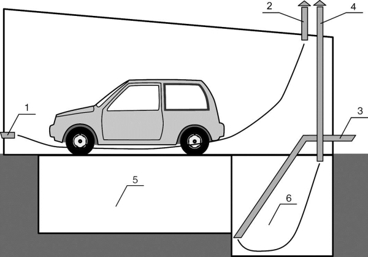
Рис. 4.2.2.1: Система вентиляции гаража с погребом и смотровой ямой:
1 — приточная труба вентиляции гаража; 2 — вытяжная труба вентиляции гаража; 3 — приточная труба вентиляции погреба; 4 — вытяжная труба вентиляции погреба; 5 — смотровая яма; 6 — погреб
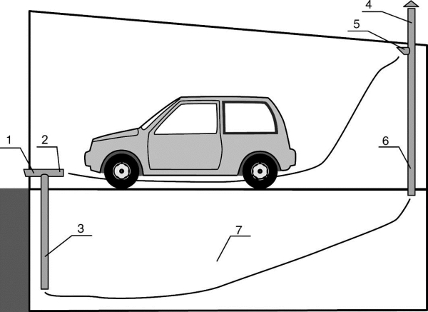
Рис. 4.2.2.2: Система вентиляции гаража с подвальным этажом:
1 — приточная труба вентиляции подвала и гаража; 2 — приточный патрубок вентиляции гаража; 3 — приточная труба вентиляции; 4 — вытяжная труба вентиляции подвала и гаража; 5 — вытяжной патрубок вентиляции гаража; 6 — вытяжная труба вентиляции подвала; 7 — подвал
Если стены кирпичные, проделать в них отверстия для приточных труб вроде бы и не проблема, но все равно это надо сделать дважды с соответствующей заделкой неизбежно образующихся рваных краев и герметизацией мест ввода труб. Но стены, а с большей вероятностью перекрытия, могут оказаться железобетонными. Тогда все осложняется — чего стоит только одна встретившаяся на пути «арматурина». Становится очевидным: число отверстий в ограждениях желательно сократить. Применительно к описанным условиям такая задачка успешно решилась на практике при изготовлении системы вентиляции гаража с подвальным помещением (рис. 4.2.2.2). При этом вентиляция была собрана из пластиковых труб заводского изготовления, комплектуемых буквально всеми необходимыми элементами (тройники, уголки, уплотнители соединений). Очевидно, что такая схема вентиляции гаража по сравнению с предыдущей помимо уменьшения трудоемкости ее монтажа характеризуется еще и уменьшенным расходом труб, а следовательно, является менее затратной.
4.2.3. Утепление и отоплениеПонятно, что отапливать имеет смысл лишь утепленное помещение, в противном случае тратиться на отопление будет в буквальном смысле означать «деньги на ветер». Многократно доказано, что затраты на утепление, какими бы они ни казались, окупаются очень быстро за счет снижения затрат на отопление.
Очевидно, что утепление и отопление актуальны в холодное время года, а при эксплуатации гаража зимой невозможно избежать потерь тепла при открывании ворот. Утепление гаража потребно, если в нем проводятся ремонтные работы в холодное время года или если в нем имеются дополнительные помещения разного назначения — бытовка, мастерская и др., которые требуют отопления.
Само собой разумеется, что все задачи утепления решаются и с использованием многочисленных утеплителей, например, минеральной ваты ROCKWOOL. Она не только выпускается в различном исполнении и для разных целей; для нее разработана целая система применения. В частности, она может представлять собой жесткие и плотные теплоизоляционные плиты, устойчивые к деформациям, пригодные для теплоизоляции на внешней стороне фасадов, причем плиты в этом случае кроме прочего являются основанием для нанесения штукатурного слоя. Крепятся такие плиты посредством дюбелей, количество которых рассчитывает разработчик фасадной системы.
Но это могут быть и легкие (145 кг/м ) гидрофобизированные теплоизоляционные плиты, нередко защищенные покровными материалами (стеклохолст, алюминиевая фольга). Область их применения — звукои теплоизоляция легких стен, мансард, кровельных конструкций и перекрытий. Эти плиты не должны подвергаться значительным нагрузкам. Их крепление, как правило, осуществляют специальными дюбелями с шайбами. Дюбели заглубляют в базу минимум на 30 мм. Минимальный диаметр шайб — 80 мм. Есть и более (90 кг/м , 45 кг/м ) легкие гидрофобизированные теплоизоляционные плиты, используемые как средний теплоизоляционный слой в трехслойных наружных стенах из мелкоштучных строительных материалов и теплозвукоизоляционный слой в покрытиях, в том числе и для устройства кровель.
Монтаж утеплителя в гараже.Утеплитель и гидроизоляцию проще и дешевле монтировать одновременно со строительством или монтажом гаража, как это имеет место, например, в случае каркасного металлического гаража. Каркас металлического гаража изготавливается из оцинкованных профилей.
Утепление гаража предусматривает сборку металлического каркаса из специальных термопрофилей. Утеплитель устанавливается в промежутки между металлическими профилями по стенам и потолку гаража (фото 4.2.3.1). Снаружи он закрывается гидроизоляцией. Утеплитель и пленки закрываются изнутри внутренней отделкой из профнастила. Плотность применяемой здесь базальтовой ваты Rockwool LB 37 кг/м3.
Очень существенную роль для теплого гаража играют гаражные ворота. Теплопотери через рулонные воротанебольшие — составные элементы ворот (ламели) достаточно плотно прилегают друг к другу и изолируют помещение от проникновения холодного воздуха. Но еще лучше защищают внутреннее пространство теплого гаража от холода секционные ворота. Их толщина 40 мм, внутри между стальными листами находится утеплитель. А это не позволяет внутренней стороне гаражных ворот охлаждаться, даже если на улице сильный мороз.
Нередко приходится утеплять гараж, который уже существует. При этом самодеятельным строителем решаются задачи как связанные с применяемым теплоизоляционным материалом, так и чисто технологические, например, как сделать работу в одиночку. Свое решение подобной задачи предложил А. Степанов.
Чтобы утеплить гараж, мне понадобилось сделать каркас из досок сечением 30? 100 мм, который я закреплял на потолке.Между ними я вставлял листы пенопласта и затем зашивал их фанерой толщиной 4 мм. Основная задача состояла в том, чтобы зафиксировать на потолке длинномерные элементы каркаса и крупные листы фанеры перед их креплением.
Внутренние размеры потолка в моем гараже составляют 6,0? 3,1 м. В качестве каркаса надо было прибить пятьшестиметровых досок (рис. 4.2.3.1): две по краям (1-ю и 5-ю), одну посередине потолка (3-ю), на которой стыкуются листы фанеры, и две (2-ю и 4-ю) между предыдущими — к ним листы фанеры крепятся для исключения их провисания. Каждую доску я прибивал в два этапа, фиксируя сначала короткий отрезок (рис. 4.2.3.2), а затем более длинный (рис. 4.2.3.3).
Сращивал я их вполдерева, причем выборка на коротком отрезке обращена к потолку. С коротышом работать удобно,поэтому я быстро закреплял его тремя шурупами на потолке, разметив и насверлив отверстия, в которые забивал стандартные дюбели.
Один конец длинной доски шипом вставлял в паз более короткой, уже закрепленной и передвигался к противоположному незафиксированному концу. Размечал и сверлил первое отверстие, забивал дюбель и шурупом временно закреплял свободный край длинной доски. Она оказывалась плотно прижатой к потолку, что позволяло разметить три-четыре отверстия по всей ее длине. После установки дюбелей можно было крепить доску окончательно.
Аналогичная проблемафиксирования возникла при работе с листами фанеры полутораметровой ширины. Можно было разрезать листы на куски меньшей площади, но тогда пришлось бы крепить больше элементов каркаса, понадобилось бы больше шурупов, дюбелей и времени для работы.
Оказалось удобно работать с помощью технологических брусков (поз. 6 и 7 на рис. 4.2.3.1), закрепленных на стенках гаража и уже установленном каркасе (рис. 4.2.3.4, 4.2.3.5) таким образом, чтобы они образовывали пазы-направляющие шириной 10 мм. Лист четырехмиллиметровой фанеры хорошо держался в этих пазах, что позволяло спокойно зафиксировать свободный край (рис. 4.2.3.5). Чтобы обеспечить везде такой же зазор между листом и поверхностью каркаса в срединной части гаража, я использовал прокладку из фанеры толщиной 10 мм.
Брусок применен длиной 120 см. При креплении его на боковой стене гаража необходимо оставить свободный промежуток в углу, чтобы контролировать примыкание листа фанеры к стене.
В наши дни все большее распространение уже готовых, изначально отнюдь не теплых гаражей получает теплоизоляция пенополиуретаном (фото 4.2.3.2).
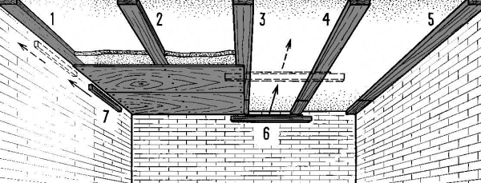
Рис. 4.2.3.1. Утепленный потолок на бетонном гаражном перекрытии
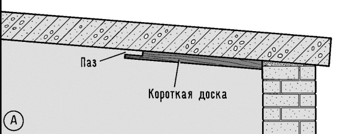
Рис. 4.2.3.2. Короткий продольный элемент каркаса обшивки потолка
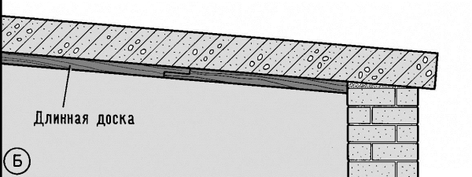
Рис. 4.2.3.3. Продольный элемент каркаса обшивки потолка в сборе
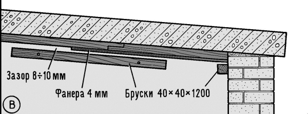
Рис. 4.2.3.4. Этап установки обшивки потолка
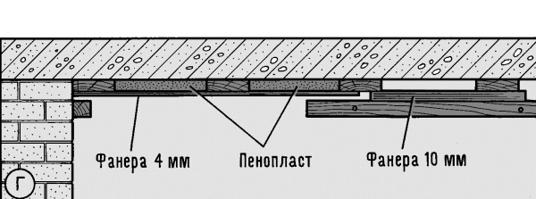
Рис. 4.2.3.5. Завершение установки обшивки потолка
Теперь об отоплении.Еще сравнительно недавно наличие в гараже соляровой печки от «Икаруса» считалось большой удачей. Приспосабливали люди даже печку от «Запорожца». Но такую печку надо было «добывать», ремонтировать, настраивать и т. д. Однако, когда все это преодолевалось, в гараже действительно становилось тепло. Обогревались и самодельными электрическими обогревателями, как правило, очень энергоемкими и опасными. Сейчас все изменилось радикальнейшим образом. Каких только обогревателей ни предлагает современный рынок. Зайдите в Internet и увидите массу предложений типа:
Воздушное ОТОПЛЕНИЕ гаражей.
ТЕПЛОГЕНЕРАТОРЫ ВОЗДУХ — ВОЗДУХ 16–2000 кВт!
ВЫСОКОАВТОМАТИЗИРОВАННЫЕ ТЕПЛОГЕНЕРАТЫ «Термэффект»!
Более 100 вариантов различных комбинаций оборудования с эквивалентом тепловой мощности от 16 до 2000 кВт.
Несколько стандартных режимов работы.
Ваш выбор — газ или жидкое топливо.
К вашим услугам горелки лучших мировых производителей RIELLO, HERRMAN, GIERSCH, WEISHAUP.
Суперэкономичное отопление для гаражей ТЕПЛОГЕНЕРАТОРЫ STEAMTHERM-M.
Передвижные дизельные и газовые теплогенераторы могут применяться для обогрева помещений, а также для обогрева и сушки на строительных площадках (рис. 4.2.3.6). Благодаря удобной, компактной форме, теплогенератор легко перемещается и занимает небольшую площадь. Даже самый крупный агрегат мощностью 120 кВт легко проходит в стандартные дверные проемы и передвигается одним человеком.
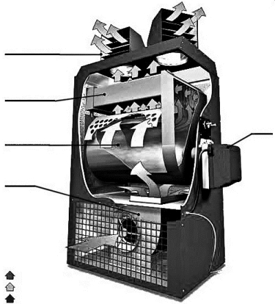
Рис. 4.2.3.6. Дизельные и газовые теплогенераторы могут применяться для обогрева помещений, а также для обогрева и сушки на строительных площадках.
Разумеется, там же можно найти и характеристики различных отопительных устройств, например, такие: СТИМТЕРМ оснащены теплообменником, в котором нагревается воздух (т. н. непрямой нагрев). Теплый, чистый воздух подается в помещение напрямую или через воздуховоды. Выход воздуха расположен значительно выше, чем у большинства моделей теплогенераторов, что повышает эффективность обогрева и способствует уменьшению пылеобразования. При использовании дизельного топлива топливная емкость (канистра) устанавливается на расстоянии до нескольких метров от агрегата, не увеличивая его вес. СТИМТЕРМ оснащены мощным вентилятором, что гарантирует максимальную скорость нагрева или сушки даже при самых сильных морозах. Прочность конструкции, высокая экономичность — главные отличительные особенности СТИМТЕРМ. Воздухонагреватели и теплогенераторы СТИМТЕРМ бывают дизельные и газовые.
А вот другая компания — «Технические системы и технологии» — с 1993 года занимается разработкой и производством электрической энергосберегающей системы отопления «ЭкоЛайн» на базе длинноволновых обогревателей. Обогреватели «ЭкоЛайн» предназначены для быстрого и комфортного обогрева помещений от 2 до 20 м . Наибольший экономический эффект дает использование длинноволновых обогревателей как основной системы отопления взамен традиционных конвективных систем в помещениях с высокими потолками (экономия эксплуатационных затрат до 60 % выше). Применение обогревателей для локального обогрева, например, рабочих мест в производственных корпусах, существенно усиливает экономический эффект.
Существует ряд специфических особенностей таких систем обогрева:
• экономия электроэнергии,
• равномерное распределение температуры в помещении по вертикали,
• равномерный поверхностный нагрев,
• возможность работы в среде с высокой влажностью,
• повышенная комфортность,
• экологичность,
• отсутствие переноса пыли,
• минимальные капитальные затраты,
• потолочное крепление,
• простой монтаж-демонтаж.
Мелькают названия различных отопительных устройств: электрические паровые котлы, мобильные парогенераторы, теплогенераторы, воздухонагреватели, тепловентиляторы и т. д. Перечисляются их тепловые мощности и потребляемые электрические мощности. Например, тепловая мощность — 30 кВт, вес — 65 кг, воздухопроизводительность — 2200 м /час, расход диз. топлива — 2,2–3,7 л/час, электроприсоединение — 220 В, потребляемая электрическая мощность 0,4 кВт.
Так что вопрос скорее стоит не как отопить гараж, а что для этого выбрать? И тут опять же однозначного ответа нет и быть не может, ибо все зависит от множества конкретных условий. Так, если гараж, например, кирпичный, примыкающий к дому, отапливаемому водяным отоплением, оптимальной, скорее всего, будет аналогичная же система отопления гаража, ибо для нее потребуется всего лишь несколько дополнительных радиаторов, притом что все прочие проблемы уже решены применительно к дому.
Крайним с другой стороны является случай отопления отдельно стоящего гаража, да еще и металлического, да еще и эпизодически посещаемого. Тут, как говорится в метеопрогнозах, «все возможно». Посмотрим, как обсуждается эта проблема на одном из чатов Интернета.
1-е действующее лицо: «Наконец привезли мне ТЭН на 3,5 кВт для работы в жидкой среде. Сосед сварит под него емкость. Осталось только радиаторы отопления приобрести. Оказывается, недешевое это удовольствие… За немного поюзанные просят 2,5$ только за одно ребро! А мне их надо условно на стену длиной 6 метров. Около 100$ получается… Зашибись установочка получается. Это я про цену… Может, кто в курсе, где можно купить батареи отопления не по таким ценам?»
2-е действующее лицо: «Некоторые соображения по теплотехнике:
1. Не обязательно ставить именно радиаторы. Если у тебя сосед — сварщик, возьми пару-тройку труб на 10 см диаметром и пусть он тебе их сварит в общую систему.
2. По-любому надо ставить т. н. расширительный бак, в самой верхней точке системы. Емкость системы у тебя выйдет приличная, так что расширительный бак надо не менее 25 литров, с верхним отводом перелива (на улицу).
3. Нагреватель надо ставить в самой нижней точке. Это если система — с «естественной циркуляцией». Если с «принудительной» (+ циркулярный насос) — то без разницы.
4. Ты собираешься топить всегда? Или только когда надо? Если второе — в системе должна быть не вода, а тосол или отработка. Но в этом случае параметры системы надо считать несколько по-другому (наклон труб и диаметры подводов и прочее) — вязкость теплоносителя другая.
5. Емкость системы у тебя будет достаточно большая, так что для выхода ее на отопительный режим надо будет приличное время. И если ты будешь топить не всегда, а только когда приходишь, эффективности будет — ноль.
6. Если топить будешь всегда (оставлять систему без присмотра) — надо предусматривать автоматику от перегрева, выкипания, пожара.
7. При такой мощности нагревателя — должна быть хорошая проводка. 3,5 кВт — это рабочих 16 ампер! Соответственно проводка должна выдерживать как минимум 25 ампер нагрузки. А это не менее 4 мм сечение медного провода. Еще и заземление обязательно, если не враг себе. Причем заземление — хорошее, а не просто «бочка», закопанная в землю.
Итого: я не хочу никого отговаривать, но я бы не стал делать жидкостную систему отопления гаража. Если топить постоянно — нужна надежная автоматика. Если — время от времени — малоэффективно. Лучше поставить пару масляных или каталитических или ИК обогревателей и включать их, когда надо.
Тем более что, при необходимости, можно их использовать в другом месте.
С уважением, Андрей».
3-е действующее лицо: «Чем только гараж не топил… наверное, только по-черному не отапливал. Щас отапливаю.
Печь на газу (газовая пушка-турбина Einhell), наверное, в Переводе — Один Ад, было бы два сопла — была бы ЦвайХэлл и т. д.
Пр-во Германия. Вся автоматика в ней. Мне баллона 50 литров хватает на неделю (15 тыщ белорусских за заправку, вполне терпимо, если там работать, а не пиво с музыкой глушить).
Стоит такая пушка 200 баблов + 3 баллона на 50 литров и все.
Электричества потребляет кроху, а с 0 °C до +10 °C поднимает в помещении 98 м (это 5 ? 8 ? 2,5) за 10 мин!
Единственное неудобство — если курить в помещении, то жжет глаза. Если не курить и не работать с ацетоном — все ОК.
Все остальные попытки к добру не привели. ОВ-65, ОВ-95 — полный отстой! Переделывал плунжерные насосы на капельную систему, ставил датчики пламени и т. д. Г. оно и есть совдеповское Г. Жрет соляру только и воняет. Осветительный керосин лил (он дешевле и качественне, дешевле т. к. нет акциза за дороги в нем) толку не много.
А жидкую систему надо, если в гараже каждый день работаешь.
Это класс. Но печь на газу все равно нужна. Типа выехала машина заехала, включил печь на 5 минут ровно и опять Ташкент.
Опять-таки с утра пришел, перевел жидкую из прогрева в отопление а сам пока печкой воздух нагрел. И газа мало уходит и тепло все время».
4-е действующее лицо: «На самом деле опыт по данной теме у меня есть.
Дача у меня с таким отоплением сделана. Значит что замышляется:
— все-таки радиаторы, а не трубы. Дороже, но площадь рассеивания большая.
— заливается однозначно тосол. Тут без вопросов.
— ставится автоматика на нагрев. Т. е. датчик на отключение.
— проводка да… Это вопрос. Буду делать другую.
— топить будет не все время. Просто вечером в гараж — значит утром включил».
В приведенных выше цитатах текст умышленно сохранен в виде, максимально приближенном (насколько это возможно) к оригинальному. В данном случае дело не в стиле, а в том, как народ решает проблему. Показательно, что по-разному и важно, что попутно оцениваются совершенно различные варианты систем отопления. И что уж совсем ценно, так то, что оценки и сравнения проводятся по результатам практического использования, а не только по сведениям рекламы. Заманчиво, в частности, прочесть объявление типа:
«Cенсация в мире тепла! Обогрев помещений осуществляется мягким тепловым инфракрасным излучением с оптимальной спектральной характеристикой (в биорезонансном диапазоне длин волн), что по биофизическому воздействию на организм человека соответствует лечебному воздействию русской печи и создает исключительный тепловой комфорт. Экономия электропотребления, по сравнению с отопителями конвективного типа, тепловентиляторами и тепловыми завесами минимально на 20–30 %. Высокая надежность, долговечность, пожаро-, и взрывобезопасность. Возможность применения отопительных панелей в качестве стеновых отделочных материалов; изготовление тепловых подоконников, откосов, стен, элементов интерьера. Применение панелей для отопления мастерских, складов, гаражей позволяет отказаться от менее долговечных тепловых завес, особенно в сырых, запыленных, взрывоопасных помещениях с агрессивной средой. Цена 1500 р. за ЭИМТ длиной 1000 мм, шириной 500 мм, толщиной 20 мм, весом 13 кг и мощностью 250 Вт».
Но речь в данном случае идет о том, что хорошо бы посоветоваться с народом, который уже испытал на себе «волшебную силу искусства» рекламы. Вот еще один пример, казалось бы, идеального для гаража варианта отопления.
• «Стационарные обогреватели. 100 %-ный чистый воздух без дыма, копоти и сажи. Горение без запаха.
• В качестве топлива возможно использовать отработанное автомобильное масло, гидравлику, солярку и их смеси.
• Простота конструкции, неприхотливость к качеству топлива гарантируют длительную и надежную работу обогревателей.
• Поставляются модели с вентилятором для увеличения теплоотдачи.
• Для пыльных помещений возможно подключение отдельного воздуховода для забора воздуха снаружи.
• Простые и удобные в эксплуатации.
• Минимум технического обслуживания.
• Снабжены датчиком переполнения топлива.
• Существуют модели для подключения к воздушным каналам (модели AT 40 °C, AT 50 °C).
• Быстрая окупаемость за счет дешевого топлива.
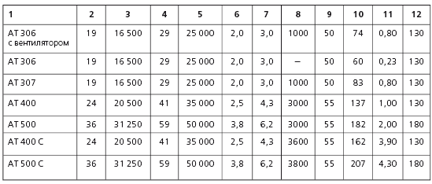
1 — Модель
2 — Тепловая мощность min (кВт)
3 — Тепловая мощность min (кКал/час)
4 — Тепловая мощность max (кВт)
5 — Тепловая мощность max (кКал/час)
6 — Расход топлива min (л/час)
7 — Расход топлива max (л/час)
8 — Мощность вентилятора (куб. м/час)
9 — Емкость бака (куб. м/час)
10 — Вес без топлива (кг)
11 — Потребляемый ток при напряжении питания 230 B (A)
12 — Диаметр выхлопной трубы (мм)
Печь предназначена для воздушного отопления автосервисов, гаражей, цехов и прочих промышленных помещений и относится к нагревателям испарительного типа. Топливо подается по каплям в камеру сгорания, испаряется и только потом (бездымно!) сгорает. Благодаря своей простоте подобная конструкция обеспечивает максимальную надежность и при этом экологически безвредное превращение отработанного масла в тепло. Печи очень надежны и просты в эксплуатации. Отопителям не требуются компрессоры, горелки или подогреватели топлива. Топливный бак входит в состав печи и рассчитан на 14–25 часов непрерывной работы. Мощный осевой вентилятор, увеличивает скорость прогрева помещения. Два тепловых режима 20 кВт и 35 кВт. Дополнительная фильтрация или подогрев топлива не требуются. Все запасные части отечественного производства, недорогие и легко доступны. Автоматическая защита от перегрева, перелива топлива обеспечивает безопасную эксплуатацию печи. Отопители сертифицированы Госстандартом РФ, Противопожарной службой России, Санитарно-эпидемиологической службой РФ».
Возможно, что все так и есть. Но тогда еще вероятнее, что кто-то уже оценил по достоинству все совершенство этой печи на практике, остается только это выяснить, что в наше время проблем не составляет.
Однако возникает необходимость разобраться с отоплением гаража, как говорится, в целом. Зачем это нужно? В частности, в отапливаемом гараже не возникает проблема холодного запуска двигателя, да и всякие ремонтные работы в случае их необходимости производить гораздо комфортней. Однако гараж — очень специфическое помещение, и прежде чем выбрать вариант обогрева, нужно хорошо разобраться, каким требованиям система отопления должна соответствовать.
В первую очередь надо понимать, что гараж — это техническое, а не жилое помещение. В нем, как правило, хранятся моторные масла, небольшой запас бензина или дизтоплива, различные средства автокосметики. В силу этого в гараже, как ни в каком другом помещении, высока пожароопасность. Поэтому при выборе системы отопления для гаража крайне важна ее безопасность.
Самый простой вариант отопления гаража — это когда он строится вместе с домом и составляет с ним единое архитектурное целое. В этом случае в гараже обустраивается то же отопление, что и во всем доме — в частности водяное, проведенное в гараж от центрального водогрейного котла, работающего на природном газе или электричестве. В этом случае в гараже находятся только наполненные водой радиаторы, которые сами по себе ни в коей мере не огнеопасны.
Однако отопление в доме, а значит, и в гараже может быть и воздушным.
Для отопления отдельно стоящего гаража от домашнего котла понадобятся дополнительный насос, способный обеспечить прокачку воды до гаража, и прокладка труб к установленным в гараже радиаторам. Для этого надо рыть траншею, а трубы защищать теплоизоляцией. Такой вариант, естественно, более дорогой, а потому приемлем в том случае, когда гараж не слишком удален от водогрейного котла.
Обособленная система водяного отопления более уместна, когда речь идет о нескольких гаражах, например, в гаражном кооперативе. Тогда стоимость системы отопления, ее установки и эксплуатации делится на всех пайщиков, что рентабельнее. Вместо воды в системе отопления гаража во избежание замерзания жидкости в трубах следует использовать антифриз, что ведет к еще большим затратам.
Электрическое отоплениегаража с применением для этого конвекторов или теплого пола, технически проще, чем водяное отопление. Однако к установке и расположению в гараже электрических обогревающих приборов предъявляются дополнительные технические требования. В частности, в помещении, которое служит складом горюче-смазочных материалов, обустройство электрического отопления запрещено.
Провода, проложенные к электрическим панелям отопления (конвекторам), должны прокладываться в заземленных металлических трубах. Все контакты и разъемы должны быть влагозащищенными, а выключатели полностью герметичными и не допускающими искр при срабатывании. Все выключатели, предохранители и силовые щиты желательно разместить за пределами гаража, в крайнем случае на внешней стороне сооружения. Что же касается смотровой ямы, если таковая имеется, то в ней допускается применение напряжения не более 36 вольт.
ИК-отопление гаража.В последнее время получают все большее распространение инфракрасные обогреватели: панельные и пленочные. Их действие заключается в обогреве именно предметов, непосредственно находящихся в радиусе действия приборов. Это позволяет направить тепло на определенную зону помещения, например, рабочее место.
Применение пленочных обогревателей для отопления гаража практически не имеет противопоказаний. Панельные ИК-обогреватели способны нагреваться до высокой температуры, поэтому следует проявлять достаточную осторожность. Суть в том, что испарения горюче смазочных материалов собираются в верхней части помещения. Поэтому применение ИФК-панелей, имеющих температуру нагрева порядка 200–250 °C, возможно не всегда. В случае применения в гараже ИФК-обогревателей необходимо в обязательном порядке обустроить принудительную вентиляцию гаража. Так же не следует размещать ИК-панели непосредственно над местом расположения автомобиля, поскольку длительное воздействие длинноволнового инфракрасного излучения на лакокрасочное покрытие кузова до конца не изучено.
Прочие обогреватели гаража.Достаточно часто для отопления гаража применяются обогреватели на дизельном топливе с форсункой или капельницей, электрические и не только тепловые пушки, теплогененераторы прямого и непрямого нагрева, различного рода мобильные печи, работающие на чем угодно: начиная от дров и заканчивая отработанным маслом.
Вид потребляемого топлива является важнейшей характеристикой любого источника тепла. Очевидно, что выбирать придется и его.
Газ— относительно дешевое топливо, однако для реализации работающей на нем системы отопления необходимы привлечение профильных специалистов и использование только заводского оборудования. Любая самодеятельность категорически запрещена. Меры безопасности оправданы, так как речь идет о взрывоопасном веществе. Имеет значение и доступность газа для потребителей, которая отнюдь не повсеместна. А кроме того, первоначальные вложения в систему газового отопления таковы, что окупаемость за счет более низкой цены топлива может составить десятилетия.
Весьма широк выбор электрических отопительных приборовразного вида и мощности. Однако стоимость обогрева в этом случае очень высока, а надежность электрообеспечения в нашем продвинутом веке все еще оставляет желать много лучшего.
По-прежнему остается доступным и надежным отопление твердым топливом— дровами, углем, торфом. Такой вид отопления популярен в регионах, где газа нет, а электричество может пропадать на неопределенный срок.
Хватает в нашей стране и дизельного топлива— солярки, а потому различные отопители на солярке также получили широкое распространение. Однако такое отопление является едва ли не самым дорогим. Вот почему в последние годы все большую популярность получает отопление отработанным маслом — отработкой,которая наиболее близка к солярке по своим свойствам, но совершенно не сопоставима с ней по цене. Появилось и промышленное оборудование для сжигания отработки, которое, однако, отнюдь не дешево. Вот почему в последнее время среди умельцев всей страны самодельные печки на отработке очень популярны (фото 4.2.3.3).
Воздушное отопление.Принцип работы такой отопительной системы заключается в создании интенсивного потока теплого воздуха, который прогревает помещение наиболее быстро.
Воздушные отопительные системы идеально подходят для организации обогрева гаражей. Главной ее составляющей частью является тепловентилятор. Разнообразие этих аппаратов позволяет подобрать их нужные параметры: топливо, мощность, размер и способ крепежа. Для организации автоматической системы воздушного отопления существуют готовые комплексы, монтаж которых выполняется специалистами. По всем параметрам для гаража это очень эффективное отопление.
4.2.4. Стеллажи, верстаки, полкиЗдесь речь пойдет о совершенно необходимых гаражных атрибутах, пренебрегать которыми во всех смыслах «себе дороже» и заниматься ими намного лучше непосредственно в процессе строительства гаража.
И действительно, как только в гараже помимо стоянки автомобиля затевается его ремонт, мгновенно возникает дефицит места для складирования узлов, деталей, инструмента и материалов. Но даже если форс-мажора не происходит, хранить в гараже приходится многое, как связанное с автомобилем, так и то, что размещать в иных местах несподручно, а в гараже — в самый раз. Вот почему гараж в первую очередь оборудуется полками и стеллажами. Как только гараж становится достаточно оснащенным для использования его в качестве мастерской (не обязательно авто-), не избежать наличия в нем верстака.
Как и во все остальное, технический прогресс внес свои изменения в конструкции современных стеллажей, минимизируя занимаемую ими площадь и оптимизируя процесс хранения различных предметов и материалов. Стеллажи превратились в продвинутый товар, а в качестве изделий у них появилась своя классификация. Условно стеллажи подразделяются в зависимости от сферы использования: архивные, офисные, выставочные, складские, бытовые. Почему-то стеллажи для гаражей в этой классификации отнесли к бытовым, хотя точнее было бы назвать их складскими, которые применяются для хранения любых грузов и в зависимости от их веса и габаритов имеют разную конструкцию.
Но в данном случае действительно не в названии дело, а в том, что редко какой гараж обходится без стеллажей и полок, а потому гораздо интереснее подразделить их по конструкции: стационарные, передвижные, универсальные быстросборные.
Стационарные, пожалуй, наиболее просты по конструкции и исполнению. Зачастую их конструкция предусматривает обязательное крепление к стене для придания жесткости всему сооружению. Применение передвижных стеллажей позволяет значительно увеличить объем хранения в помещении по сравнению со стационарными стеллажами. Для гаража, кстати, где на полках могут храниться тяжелые грузы, это позволяет и перемещать их на требуемые расстояния без лишних тудозатрат.
Быстросборные стальные стеллажи имеют перфорированные стойки, что дает возможность устанавливать полки на любой высоте. По сути дела — это большой металлический конструктор, из которого, оборудуя гараж, можно сделать стеллаж того размера, который необходим. Существует большой набор стандартных размеров с различной шириной и высотой. Есть комплекты стоек для наращивания высоты. Есть большой выбор дополнительных полок. Пофантазировав немного и скомбинировав предлагаемые стандартные наборы, можно сконструировать «нестандартный» стеллаж — именно такой, который точно будет соответствовать и размерам, и целям, для которых его планировали.
Такие стеллажи выпускаются многими фирмами. Базовая комплектация стеллажа может содержать, например, 4 полки. Расчетная нагрузка на полку может составлять 50 кг. Да при этом еще возможна комплектация любым количеством полок. Большим достоинством быстросборных стеллажей является возможность их перекомпоновки под нужды сегодняшнего дня и возможность транспортировки в разобранном виде.
При выборе того или иного стеллажа нужно прежде всего определиться с тем, что и как будет там храниться. Каковы интенсивность использования объекта хранения; характер и техническое состояние помещения, отведенного для установки стеллажей. От этого зависят удобство и скорость работы с объектом хранения, его сохранность и безопасность работы.
Не меньшей, если не большей «индустриализации» подверглись такие обязательные гаражные атрибуты, как верстаки. Все, что душе угодно: верстаки безтумбовые, верстаки однотумбовые, предлагаемые модели и т. д. Имеются схемы формирования артикула изделия. Чего стоит только один пример артикула: 01.1-4-W3000/G — Верстак однотумбовый, тумба с четырьмя ящиками, деревянная столешница, цвет верстака — красный (RAL3000), цвет ящиков (G) — серый (RAL7001).
А как выглядит «шлейф» предложений:
• Для всех моделей верстаков можно дополнительно заказать резиновые коврики для ящиков тумб (артикул 11.03.A1).
• Цвет ящиков верстаков, помимо предложенных, может быть серым (RAL 7001).
• Оцинкованная столешница (G) изготавливается из плиты MDF толщиной 28 мм и покрывается оцинкованной сталью толщиной 1,5 мм.
• Деревянная столешница (W) изготавливается из влагостойкой шлифованной фанеры толщиной 36 мм.
• Цвет ящиков тумб, помимо предложенных, может быть серым (RAL 7001).
• Столешницы для тумб и верстаков могут быть изготовлены из дерева (W) или из оцинкованной стали (G).
Вот верстак, в частности предназначенный для установки в индивидуальные гаражные боксы. Базовая модель верстака ВС-2 и ВС-3 представляет собой разборную несущую раму со столешницей (М — металл 6 мм, Ф — фанера 28 мм, МФ — металл + фанера). Рама верстака может комплектоваться одним, двумя или тремя модулями из набора: тумбой с дверцей (Т), блоком-полкой (П), блоком-полкой узкой (Пу), драйвером (Д) с тремя выдвижными ящиками, запираемыми одним общим замком. Рама изготовлена из квадратной трубы размером 50 ? 50 мм, модули из листовой стали 1,52 мм. Для верстака типа ВС-2 количество устанавливаемых модулей — два, ВС-3 — три. Пример полной комплектации: Верстак ВС-3М-ТПД-Э состоит из рамы, сетчатого экрана, 3 модулей: тумбы, полки и драйвера.
Верстак ВСМ имеет разборную корпусную конструкцию из листовой стали толщиной 2,5 мм с металлической столешницей толщиной 6 мм, двумя тумбами, закрывающимися замками марки «Блок-М» (Россия) и полки. При необходимости верстаки комплектуются съемными сетчатыми экранами с полкой. Изделия покрыты порошковой краской производства Финляндии, цвет серый (RAL-7035) и синий (RAL-5002). Металлические столешницы верстаков — синие, из фанеры — покрыты лаком цвета натурального дерева. Экран — синий, полки навесные серые. Драйвер, тумба, полка, полка укороченная — серые.
В предложениях многих совместных и отечественных предприятий можно встретить следующее:
ВЕРСТАКИ представлены в количестве 44 моделей различных по количеству верстачных тумб, с оцинкованной или деревянной столешницей. На выдвижных ящиках предусмотрен центральный замок.
СТЕЛЛАЖИ различаются габаритами и покрытием полок (окрашенные, оцинкованные). Расстояние между полками регулируется.
Верстаки, стеллажи могут быть укомплектованы вертикальными перфорированными панелями для размещения, например, на специальных крючках рожковых ключей. Ящики, полки и верстаки по желанию комплектуются резиновыми ковриками из маслобензостойкой резины, что позволяет существенно снизить уровень шума.
Теперь несколько слов о полках, имеются в виду подвесные полки, поскольку стеллажи также частично из полок состоят. Они служат для тех же целей, что и стеллажи, но не занимают площадь пола, что в гараже может быть особенно важным. Для того же используются и антресоли, где обычно хранятся габаритные вещи. Практически их изготовление от такового для стеллажей тем и отличается, что их несущие элементы (аналоги стоек стеллажей) крепятся к стенам и потолку, там, где это возможно. К недостаткам же можно отнести необходимость пользования лестницей, что, впрочем, вполне окупается выигрышем свободного места в гараже.
Может возникнуть вопрос: а к чему все это изобилие мастеру, который, самостоятельно построив гараж, уж как-нибудь осилит стеллаж и верстак? Тут два момента. Во-первых, гараж может строиться и с прицелом на покупное оборудование, если таковые возможность и желание есть. А во-вторых, если в плане исполнения есть возможность сделать что-то из оборудования гаража не хуже фирменного изготовления, имеет смысл ознакомиться с идеями, заложенными в промышленные изделия. При этом, как правило, нет смысла использовать прямое копирование, ибо самодельщику трудно конкурировать с производственными технологиями. Именно в таких случаях чаще всего и срабатывает правило «Голь на выдумки хитра». Собственно этим и занимается большинство самодельщиков.
На загородном участке использовать гараж еще и в качестве мастерской для самых разных работ, как говорится, «сам бог велел», а потому резонно соорудить в нем большой стационарный верстак. Ведь гараж, так или иначе, имеет соответствующие размеры, а значит, работать с тем же длинномерным материалом в нем особенно удобно, да и всякие прилады для работы на малогабаритном верстаке в этом случае попросту становятся ненужными.
Само собой разумеется, что идея такого верстака может иметь самые разные воплощения, но, пожалуй, простейший для реализации является деревянная конструкция, реально изготовленный вариант которой (фото 4.2.4.1) и рассмотрим далее. Как видно на фото, рабочий стол верстака состоит из двух прочных (толщина 50 мм) досок, расположенных с зазором порядка 20 мм и закрепленных на капитальной стенке гаража. Указанный зазор предусмотрен для работы электроинструментом: пилой, лобзиком, дрелью и т. п.
Очевидно, что основная задача как раз и сводится к надежному креплению столь массивного рабочего стола к стенке, для чего, как известно, нужны соответствующие кронштейны. Кронштейны эти могут быть и металлическими, но попытка найти в магазинах что-либо максимально подходящее к нашему случаю, ни к чему не привела. Вот почему было решено сделать кронштейны деревянными, а для упрощения и ускорения соединения деталей использовать металлические соединительные элементы, выбор которых в настоящее время необычайно велик.
Монтаж (а параллельно и изготовление) кронштейнов начинается с закрепления на стене вертикальных элементов (фото 4.2.4.2), вершины которых у всех кронштейнов должны располагаться на одной горизонтальной линии. Соединение произведено саморезами. Далее к вертикальным элементам посредством металлических соединителей крепятся опорные (для стола) части кронштейнов, которые также должны быть горизонтальными и располагаться на одной горизонтальной линии (фото 4.2.4.3). На этом снимке (слева) виден и готовый кронштейн, сборка которого завершается установкой раскоса, который также может иметь различные варианты исполнения, и крепится посредством металлических соединителей.
Когда таким образом установлены все кронштейны, можно устанавливать и первую доску стола. Сами доски стола можно строгать, свободно положив их на кронштейны, после чего остается только закрепить их. Крепить можно шурупами снизу к опорным частям кронштейнов, а примыкающую к стене доску к стене же посредством металлических соединителей. Теперь можно обрабатывать материал длиной с весь гараж, а при открытых воротах гаража и большей длины.
Сложным в изготовлении этот очень удобный в работе верстак никак не назовешь и к материалу он непритязателен (фото 4.2.4.4).
Само собой разумеется, что при необходимости разгрузить стационарный верстак от различных инструментов и материалов просто необходимы расположенные близ него полки. Была сооружена такая полка (фото 4.2.4.5) и в данном случае, причем простейшим способом и буквально из бросового материала.
4.2.5. Специальное оборудованиеК специальному оборудованию отнесем самые разнообразные специфические устройства и приспособления, предназначенные непосредственно для обслуживания и ремонта автомобиля. Смотровая яма, а тем более подъемник, в гараже могут отсутствовать по многим причинам, а необходимость в осмотре нижней части автомобиля и каком-то ее ремонте тем не менее может возникнуть в любой момент. В качестве альтернативы отсутствующим яме или подъемнику придумано изрядное количество различных мини-эстакад. Понятно, что предоставляя различную степень удобства работы с автомобилем, они отличаются и разной сложностью изготовления. Естественно также, что сварные, например, конструкции требуют соответствующих оборудования и квалификации, а есть мини-эстакады, сооружение которых под силу буквально каждому.
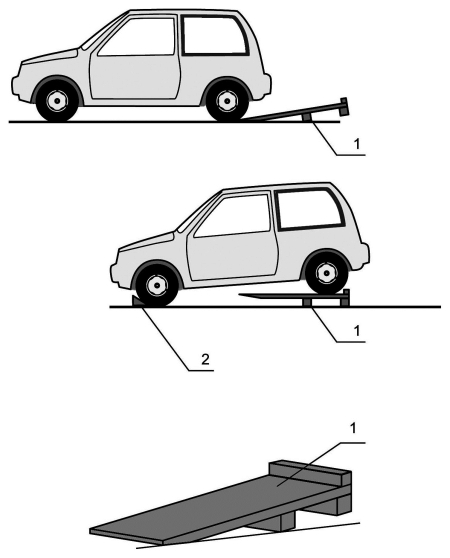
Рис. 4.2.5.1. Мини-эстакада «трапики»:
1 — трапик; 2 — упоры-колодки
Такова конструкция, которую можно назвать мини-эстакада «трапики». Она состоит из двух деревянных трапиков (рис. 4.2.5.1.), при въезде на которые передними или задними колесами соответствующая часть автомобиля приподнимается на определенную размерами элементов трапиков высоту. Эти размеры, строго говоря, определяются геометрическими характеристиками автомобиля и видами работ, которые можно производить с помощью такой мини-эстакады.
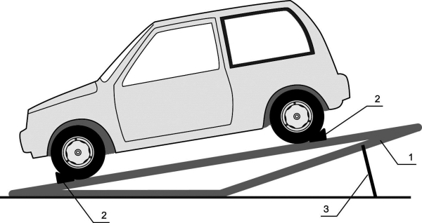
Рис. 4.2.5.2. Мини-эстакада «качалка»:
1 — эстакада; 2 — упоры-колодки; 3 — подставки-распорки
Конструкция трапика вполне ясна из рисунка. В частности его можно изготовить из доски толщиной 50 мм и брусков сечением 100 ? 100 мм. В этом случае высота подъема составит 150 мм, что в целом ряде случаев может оказаться вполне достаточным.
С точки зрения эксплуатационных свойств конструкции очень важно, чтобы в свободном (не нагруженном) состоянии трапик опирался на поверхность пола своим передним концом и ближним к нему опорным бруском. Такое свойство обеспечивается либо положением этого бруска, либо утяжелением переднего конца, например, стальной полосой, которой можно дополнительно связать образующие трапик доски. Пользование такой мини-эстакадой также очевидно из рисунка. Принципиальным является то, что трапики под нагрузкой меняют положение из исходного наклонного в горизонтальное, что требует ограничения длины трапика, исключающего его контакт с днищем автомобиля (см. рис. 4.2.5.1).
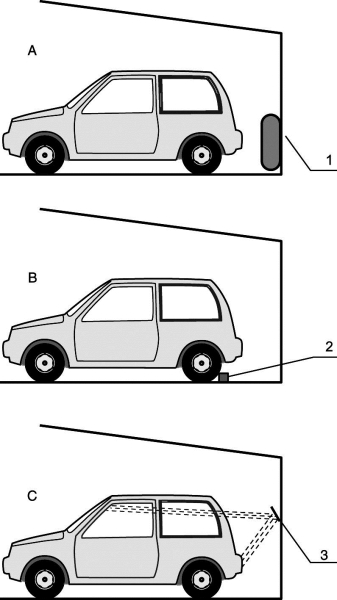
Рис. 4.2.5.3. Приспособления для своевременной остановки автомобиля при въезде в гараж:
1 — старая автомобильная покрышка; 2 — колесный упор-брусок; 3 — наклонно закрепленное зеркало
Эффективнее, но и сложней в изготовлении мини-эстакада «качалка». Она сваривается из двух расположенных по ширине колеи автомобиля идентичных рам, каждая из которых выполнена в виде равнобедренного треугольника из стальных швеллеров (рис. 4.2.5.2). Длина направляющих, естественно, определяется длиной автомобиля, а высота эстакады может составлять 500–600 мм. При въезде на эстакаду автомобиль желательно располагать так, чтобы его центр тяжести располагался как можно ближе к вершине равнобедренного треугольника, тогда подъем передней или задней частей автомобиля производится с минимальными усилиями. Очевидно, что в целях обеспечения безопасности проведения работ колеса автомобиля должны быть надежно зафиксированы на направляющих соответствующими упорами-колодками, а выбранное положение эстакады-качалки — подставками-распорками.
Каким бы ни был гараж, а он имеет ограниченные размеры. Следовательно, существует проблема точного позиционирования автомобиля в нем, особенно острая для начинающих водителей. Естественно, что наличие проблемы порождает и ее решения. Так, весьма нехитрые приспособления помогают вовремя остановить автомобиль при въезде в гараж. Это могут быть подвешенные на задней стене гаража старые автомобильные покрышки (рис. 4.2.5.3. А) или закрепленный на полу упорный брусок (рис. 4.2.5.3. В). Наклонно закрепленное на стене гаража зеркало (рис. 4.2.5.3. С) позволяет не только остановиться на заданном от стены расстоянии (стоп-сигналы или габаритные огни отражаются в настенном зеркале и видны в салонное зеркало заднего вида), но и в случае такой необходимости изменять его, меняя наклон зеркала (круче к стене зеркало — меньше расстояние).
4.2.6. Красиво жить…Дизайн в современном строительстве приобретает все большее значение, в том числе даже в таком сугубо функциональном, как постройка гаражей. Но о красоте рассказывать бессмысленно, вот где действительно «Лучше один раз увидеть, чем сто раз услышать». А потому и обратимся к фотографиям разных по типу гаражей, которые объединяет лишь то, что хозяева пожелали сделать их красивыми. Речь может идти как о декоративной покраске, оживляющей ворота, так и о внутренней отделке гаража.
Малярные работы. На завершающей стадии строительства и обустройства гаража, после монтажа многих технических узлов, можно приступить к окраске гаража.
Сначала красят потолок. Однако прежде чем начать малярные работы, необходимо укрыть привод ворот и направляющие шины (в том числе потолочные) пленкой, чтобы их не запачкать. Для окраски потолка лучше всего использовать густую, не дающую брызг краску. Ее наносят валиком в один слой.
Затем окрашивают стены. Но сначала надо тщательно очистить их от грязи и пыли. Окрашивают стены в светлые тона. Кирпичные стены сначала обрабатывают грунтовкой на водной основе для глубокой их пропитки, затем валиком наносят краску.
Отделка пола.Бетонная стяжка пола вполне износостойка. Однако это не означает, что такой пол легко содержать в чистоте. Дождевая или талая вода, стекающая с машины после возвращения из поездки в гараж, соль от посыпки дорог и многое другое отрицательно влияет на состояние пола.
Еще хуже — масляные пятна, удалить которые практически невозможно. Чтобы облегчить уход за полом, его защищают специальным покрытием.
Подготовка пола к защитной отделке. Сначала пол твердой щеткой основательно очищают от грязи и пыли. Нижние края стен на высоту 30 мм укрывают пленкой. Затем пол с помощью кисти грунтуют и наносят слой защитного покрытия. В продаже имеется множество всевозможных мастик и красок, но подбирать их надо с учетом отделки стен.
В капитальных гаражах бетонная стяжка все чаще используется в качестве основы, на которую наносятся разные покрытия, например, наливной пол или плитка, которой, кстати, неплохо покрыть наиболее подверженные загрязнению нижние части стен.
По-прежнему в обиходе и достаточно хороши дощатые полы, ибо дерево вообще очень благоприятно влияет на микроклимат гаража, нивелируя скачки влажности воздуха (фото 4.2.6.1).
По той же причине не сдает своих позиций полная внутренняя отделка гаража деревом.